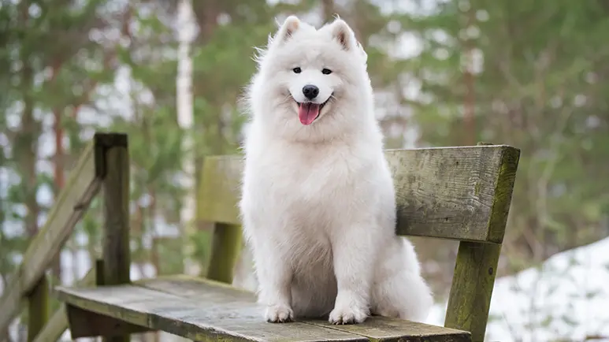
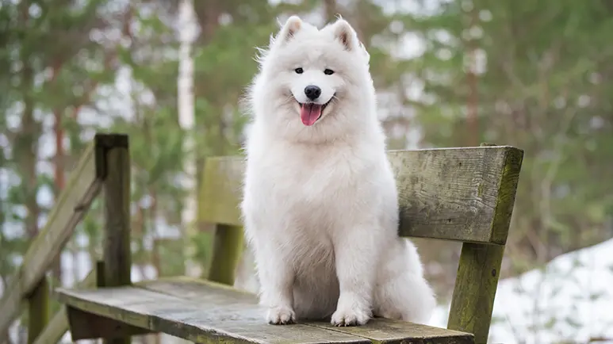
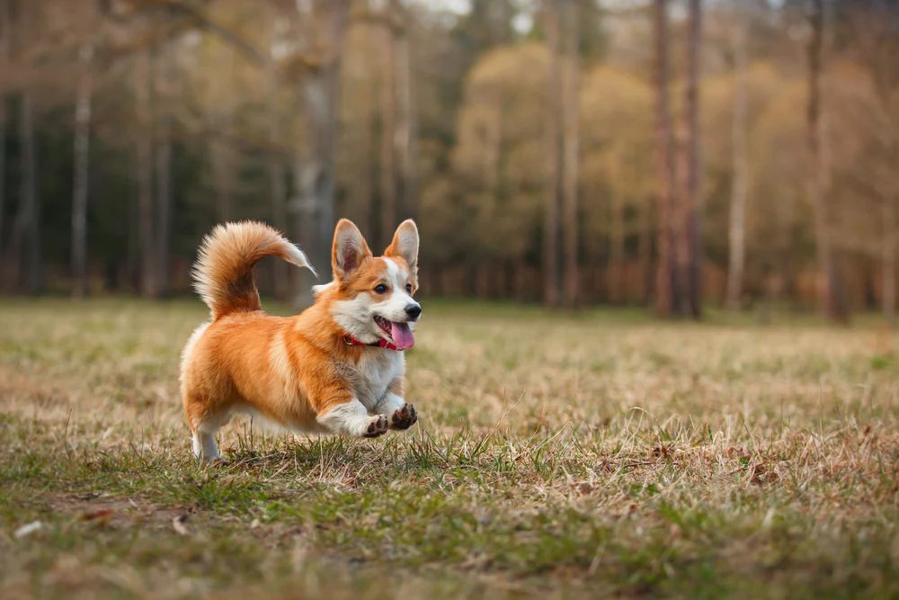

Samoyed

The Samoyed is a substantial but graceful dog standing anywhere from 19 to a bit over 23 inches at the shoulder. Powerful, tireless, with a thick all-white coat impervious to cold, Sammies are perfectly beautiful but highly functional. Even their most delightful feature, a perpetual smile, has a practical function: The upturned corners of the mouth keep Sammies from drooling, preventing icicles from forming on the face. A Sammy sentenced to solitary confinement in the yard is a miserable and destructive creature. These are smart, social, mischievous dogs who demand love and attention. Sammies need structure in training. Teach them what's expected of them early, and practice it with them often.
Samoyeds, the smiling sled dogs, were bred for hard work in the world's coldest locales. In the Siberian town of Oymyakon, for instance, temperatures of minus-60 degrees are common. The Sammy's famous white coat is thick enough to protect against such brutal conditions. Powerful, agile, tireless, impervious to cold, Sammies are drop-dead gorgeous but highly functional. Even their most delightful feature, a perpetual smile, has a practical function: The mouth's upturned corners keep Sammies from drooling, preventing icicles from forming on the face.
Photo Gallery
 


Likes
- Belly rubs
- Playing tug-of-war
- Sneaking onto the couch
Siberian Husky

Siberian Husky, a thickly coated, compact sled dog of medium size and great endurance, was developed to work in packs, pulling light loads at moderate speeds over vast frozen expanses. Sibes are friendly, fastidious, and dignified. The graceful, medium-sized Siberian Husky's almond-shaped eyes can be either brown or blue'¿and sometimes one of each'¿and convey a keen but amiable and even mischievous expression. Quick and nimble-footed, Siberians are known for their powerful but seemingly effortless gait. Tipping the scales at no more than 60 pounds, they are noticeably smaller and lighter than their burly cousin, the Alaskan Malamute. As born pack dogs, they enjoy family life and get on well with other dogs. The Sibe's innate friendliness render them indifferent watchdogs. These are energetic dogs who can't resist chasing small animals, so secure running room is a must. An attractive feature of the breed: Sibes are naturally clean, with little doggy odor.
Photo Gallery


Likes
- Running and Pulling
- Playing in the Snow
- Socializing with Others
Pembroke Welsh Corgi
Among the most agreeable of all small housedogs, the Pembroke Welsh Corgi is a strong, athletic, and lively little herder who is affectionate and companionable without being needy. They are one the world's most popular herding breeds. At 10 to 12 inches at the shoulder and 27 to 30 pounds, a well-built male Pembroke presents a big dog in a small package. Short but powerful legs, muscular thighs, and a deep chest equip him for a hard day's work. Built long and low, Pembrokes are surprisingly quick and agile. They can be red, sable, fawn, and black and tan, with or without white markings. The Pembroke is a bright, sensitive dog who enjoys play with his human family and responds well to training. As herders bred to move cattle, they are fearless and independent. They are vigilant watchdogs, with acute senses and a 'big dog' bark. Families who can meet their bold but kindly Pembroke's need for activity and togetherness will never have a more loyal, loving pet.
Photo Gallery
Likes
- Herding and Nudging
- chasing after toys
- Cuddling with their Owners
Shiba Inu
An ancient Japanese breed, the Shiba Inu is a little but well-muscled dog once employed as a hunter. Today, the spirited, good-natured Shiba is the most popular companion dog in Japan. The adaptable Shiba is at home in town or country. Brought to America from Japan as recently as 60 years ago, Shibas are growing in popularity in the West and are already the most popular breed in their homeland. Their white markings combined with their coloring (red, red sesame, or black and tan) and their alert expression and smooth stride makes them almost foxlike. They're sturdy, muscular dogs with a bold, confident personality to match.
Photo Gallery
Likes
- Exploring Outdoors
- Chewing and Playing with Toys
- Basking in Sunlight
Border Collie
A remarkably bright workaholic, the Border Collie is an amazing dog'¿maybe a bit too amazing for owners without the time, energy, or means to keep it occupied. These energetic dogs will settle down for cuddle time when the workday is done. Borders are athletic, medium-sized herders standing 18 to 22 inches at the shoulder. The overall look is that of a muscular but nimble worker unspoiled by passing fads. Both the rough coat and the smooth coat come in a variety of colors and patterns. The almond eyes are the focus of an intelligent expression'¿an intense gaze, the Border's famous 'herding eye', is a breed hallmark. On the move, Borders are among the canine kingdom's most agile, balanced, and durable citizens. The intelligence, athleticism, and trainability of Borders have a perfect outlet in agility training. Having a job to perform, like agility'¿or herding or obedience work'¿is key to Border happiness. Amiable among friends, they may be reserved with strangers.
Photo Gallery
Likes
- Training and Learning
- puzzle toys
- Water Activities